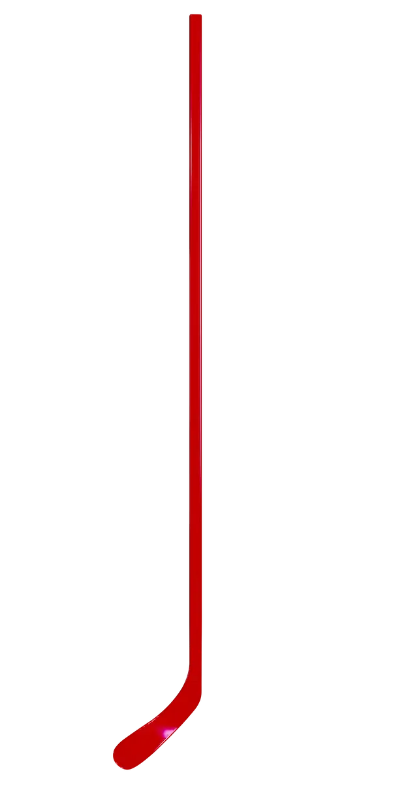

Твой дизайн
Отличный результат!
Обязательно проверь, все ли правильно: после этого шага изменить дизайн будет нельзя. А если тебе нужно внести изменения, вернись на нужный шаг с помощью кнопки «НАЗАД».
Обязательно проверь, все ли правильно: после этого шага изменить дизайн будет нельзя. А если тебе нужно внести изменения, вернись на нужный шаг с помощью кнопки «НАЗАД».
